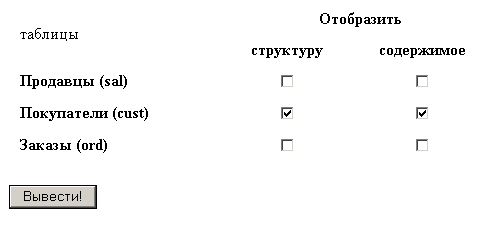
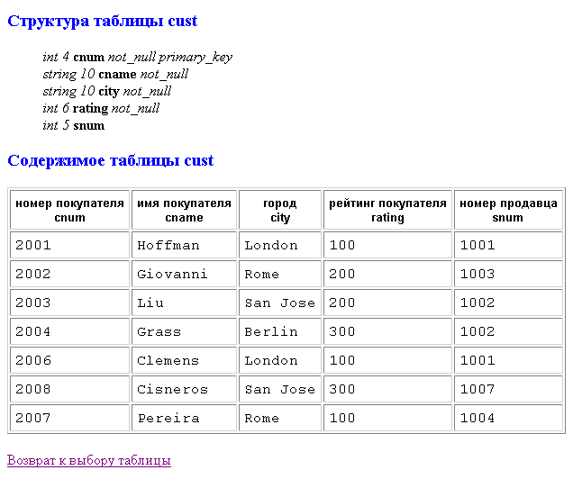
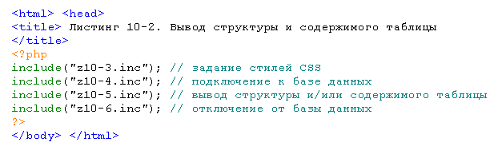
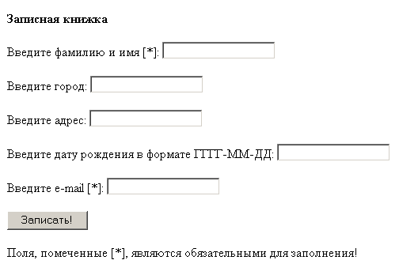
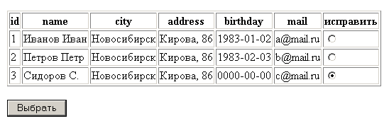
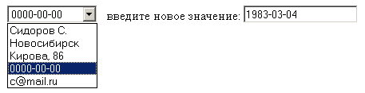
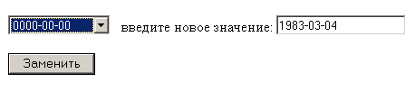

1. Создайте файл z10-1.htm с HTML-формой, позволяющей выбрать
а) структуру (группа флажков "structure") и/или
б) содержимое (группа флажков "content")
любой таблицы (или нескольких таблиц) базы данных study:

При нажатии кнопки "Вывести" должен вызываться скрипт z10-2.php (для передачи названий таблиц используйте метод GET):

2. Скрипт z10-2.php должен быть составным, т.е. иметь вид:

Именно таким образом и происходит отделение оформления страниц сайта от обращения
к СУБД и от собственно наполнения (контента) каждой страницы.
Особенно важно, чтобы для инициализации обращения к базе данных
был один единственный inc-файл! Тогда, чтобы заменить логин и пароль доступа к БД (например,
при смене провайдера сайта), достаточно исправить всего один файл.
3. В файле z10-3.inc содержится раздел <style>, в котором заданы CSS-стили для:
и команды </head> <body>
4. В файле z10-4.inc содержатся php-команды для подключение к базе данных study.
5. В файле z10-5.inc содержатся функции vid_structure() и
vid_content() для отображения структуры и содержимого таблицы, выбранной в
HTML-форме (имя таблицы является аргументом функций).
Перед вызовом функций обязательно проверять, заданы ли значения для переменных
$structure и $content.
Функция vid_structure() отображает структуру выбранной таблицы (использовать листинг 11-6).
Функция vid_content() отображает содержимое выбранной таблицы, причем в первой строке таблицы, в каждой ячейке <th> сперва указаны русские названия для столбцов таблицы, а через <br> — собственно имена столбцов. Для этого в функции создайте ассоциативный массив $rus_name[], в котором ключами будут имена столбцов, а значениями ключей — русские названия этих столбцов (массив должен быть единый для всех 3 таблиц).
В заголовках <h4> ("Структура таблицы …" и "Содержимое таблицы …") должно подставляться название выбранной таблицы.
В конце файла z10-5.inc поставьте гиперссылку на z10-1.htm ("Возврат к выбору таблицы").
6. В файле z10-6.inc содержится php-команда для отключения от базы данных.
1. Создайте скрипт ex1.php, в котором в СУБД MySQL в базе данных sample
с помощью функций РНР создайте таблицу notebook
со следующими полями:
id - целое, непустое, автоинкремент, первичный ключ,
name - строка переменной длины, но не более 50 символов,
city - строка переменной длины, но не более 50 символов,
address - строка переменной длины, но не более 50 символов,
birthday - значение даты (DATE), т.е. год, месяц и число,
mail - строка переменной длины, но не более 20 символов.
Обязательно предусмотрите в случае ошибки вывод
предупреждения:
"Нельзя создать таблицу notebook".
Совет. Перед командами создания таблицы добавьте две РНР-команды, в первой из которых содержится SQL-запрос, уничтожающий таблицу, если она уже есть:
"DROP TABLE IF EXISTS notebook"
- для того, чтобы при повторном выполнении скрипта ex1.php не появлялось сообщения об ошибке.
(Использовать листинг 11-1).
2. Создайте скрипт ex2.php с HTML-формой для заполнения таблицы notebook:

Полями, обязательными для заполнения являются name и mail, т.е. только когда они не пустые, информация заносится в таблицу notebook.
(Использовать листинг 11-2).
3. Создайте скрипт ex3.php для вывода всех записей таблицы notebook.
В форме для заполнения таблицы ( ex2.php) введите дату с нарушением формата (или вообще не число) и посмотрите, что будет занесено в таблицу.
(Использовать листинг 11-3).
4. Создайте скрипт ex4.php, в котором:
1) Должна быть HTML-форма, выводящая все записи таблицы notebook, причем рядом с каждой строкой таблицы стоит радиокнопка для выбора той строки, в которой нужно что-то изменить:

Имя этой группы радиокнопок - id, а передаваемое значение - соответствующее значение поля id таблицы notebook (оно равно $a_row[0]).
2) Если значение переменной $id задано, вывести соответствующую строку таблицы в виде выпадающего списка, а рядом текстовое поле для ввода нового значения:

Под выпадающим списком стоит кнопка "Заменить":

Имя элемента select в форме - field_name, имя текстового поля - field_value.
В атрибуте VALUE элементов OPTION (выпадающего списка) значения укажите явно ('name', 'city' и т.д.).
А на экране должны отображаться значения ассоциативного массива
$a_row['name'] ... $a_row['mail'].
Совет. В этой же форме добавьте еще скрытое поле
<input type=hidden name=id value=$id>
чтобы не "потерять" значение пременной $id.
3) Если заданы значения переменных $id и $field_name, обновите в таблице notebook значение поля $field_name на $field_value где id='$id'.
Здесь же вставьте ссылку на файл ex3.php, чтобы увидеть результат (возможно придется дополнительно нажать кнопку "Обновить" браузера).
(Использовать листинг 11-4).
5. Создайте скрипт ex5.php, запустив который, пользователь вносит в таблицу notebook три записи (данные ввода должны быть записаны непосредственно в тексте скрипта ex5.php в командах INSERT).